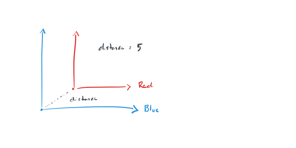
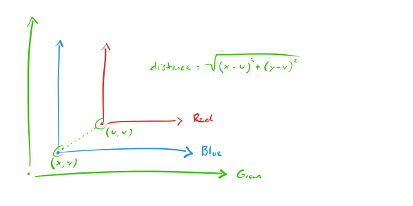

The Location of a Coordinate System
Reading "The Feynman Lectures on Physics"
Volume 1, Chapter 11, Section 2
Talking about the difference between two coordinate systems seems to imply the existence of a third coordinate system. Suppose, for example, that you have two systems: Red and Blue.
And suppose you claim that Red and Blue are 5 feet apart.
The only way to make this claim, it seems, is if there is a third coordinate system - call it Green - that is used to describe the difference.
If not, then I'm confused. I don't understand how you can say that two things are 5 feet apart if you don't do it from a system of measurement.
The only other way, it seems, is if the differences are talked about exclusively from the perspective of one system or another.
So, for example, to say that "Red and Blue are 5 feet apart" is really to say something like "Red and Blue are 5 feet apart from Red's perspective."
That, however, brings up two questions.
First, what prevents us from making inconsistent assumptions like "From Red's perspective, Red is 5 feet from Blue" and "From Blue's perspective, Blue is 3 feet from Red." And second, is it possible to know that two coordinate systems use different units of measurement if there's no third system from which to compare? If Red uses feet and Blue uses meters, can you compare their measurements?